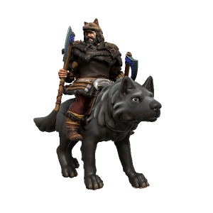

Viðar Norgandr

Pronouns he/him
Species Human (Uthgardt, Lycanthrope)
Age 34
Affiliations Uthgar, Uthgardt Rebellion, Grey Wolf Tribe
Ideals
Vidar is a devout follower of Uthgar, a traditionalist who very much keeps to the old ways. He believes that Uthgar is best revered by tribes adhering to the dogma of their totems, and that a central authority of the Uthgardt faith would fundamentally undermine its culture.
Bonds
Vidar is fiercely loyal to his kinsmen in the Grey Wolf tribe. His sexual relationship with Flugmær Hrafndottr is also one of the worst kept secrets in the North.
Flaws
He is stubborn, zealous and quick to anger.
Of those who oppose Jarl Hæsta Þrumsdottr's claim to the Fylkiriate, the most prominent is the Jarl of the Grey Wolf Tribe. Vidar is a vicious acolyte of the Old Ways and has more than earned his byname "Norgandr" (Beast Of The North). A physically intimidating figure, Vidar stands taller even than most Northlanders in his human form and larger than most horses in wolf form.